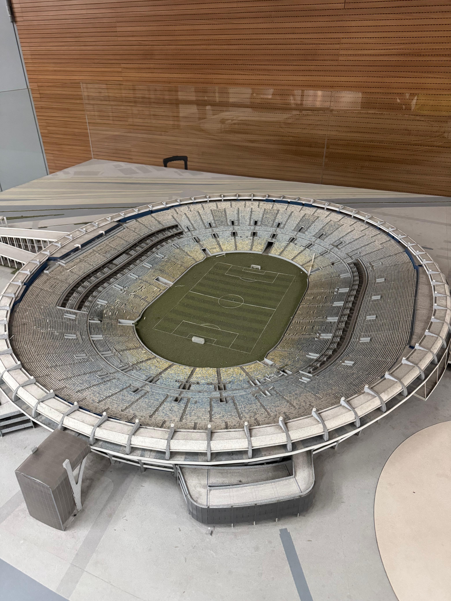
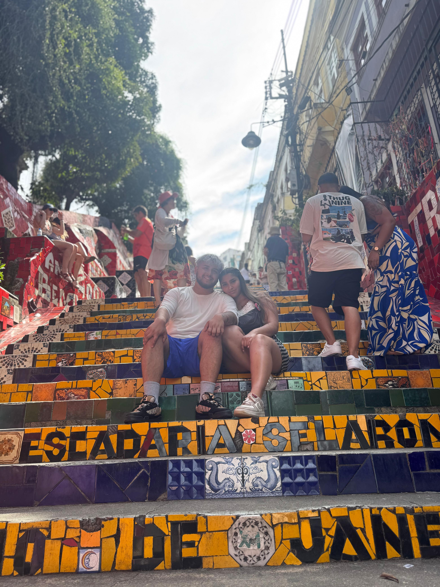

Mi Viaje a Brasil
04/12/2024
LLegamos a rio de janeiro despues de 4 horas de vuelo un poco agotados pero anciosos por conocer la ciudad
era la primera vez que viajabamos a brasil y la verdad es que nos soprendio mucho la ciudad, su gente,
la comida y la cultura. te invito a conocer mi experiencia en este hermoso pais con este pequeño album de fotos.
Dia 1: Estadio Maracana


Dia 2: Cristo Redentor
>
Dia 3: AquaRio

>

Dia 4: Escaleras de Selaron
>


Dia 5: Buzios
Al quinto dia nos iriamos de rio para concer otra ciudad de Brasil, Buzios, un lugar hermoso lleno
de playas y naturaleza, donde pasamos unos dias increibles disfrutamos del sol y la playa.

>

Dia 6: Arrial do Cabo

>

Dia 7: recorriendo Buzios
Dia 8: playas de Buzios
Dia 9: regreso a rio de janeiro
el noveno dia nos regresamos a rio de janeriro para disdrutas los ultimos dias en brasil.
Dia 10: Pao de azucar
Dia 11: regreso a casa despues de un hermoso viaje sin duda un lugar para volver siempre.